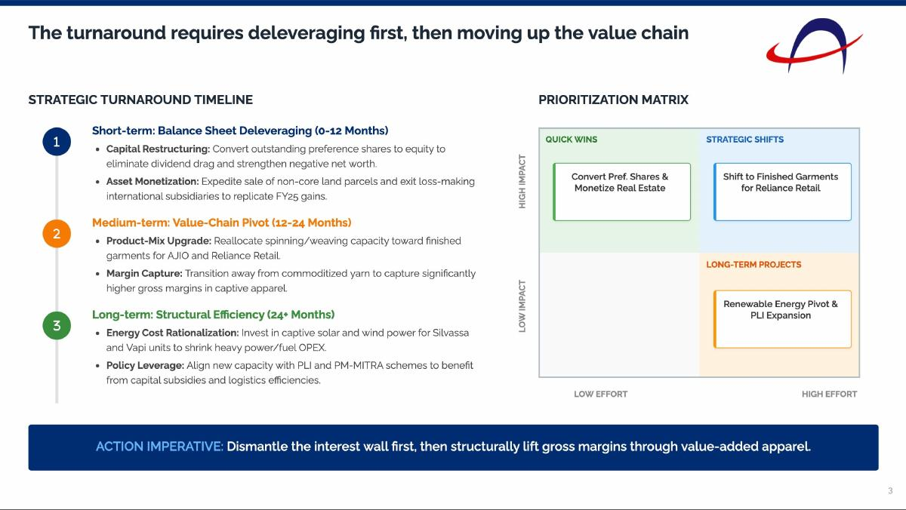
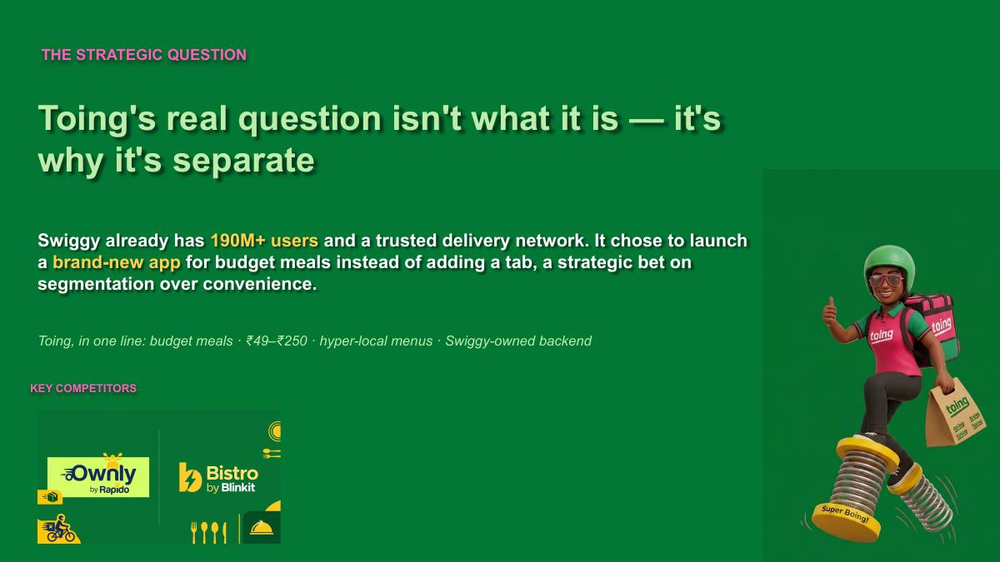
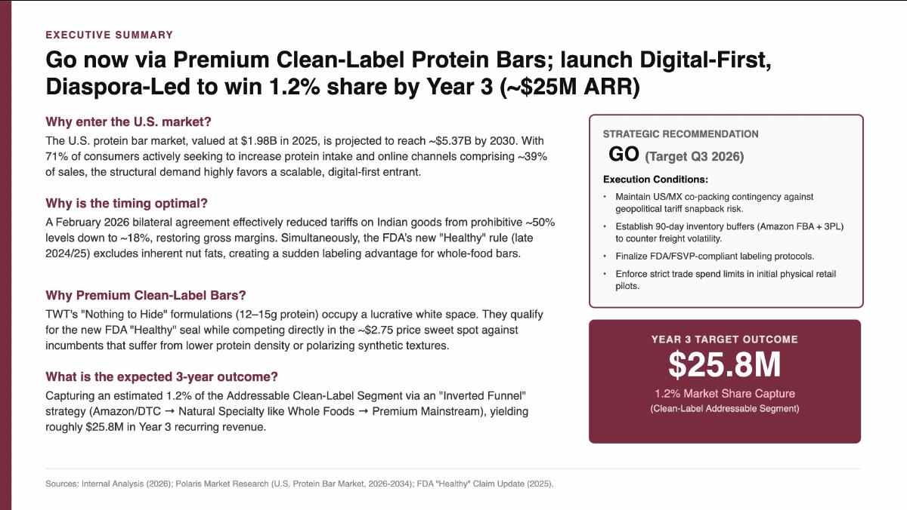
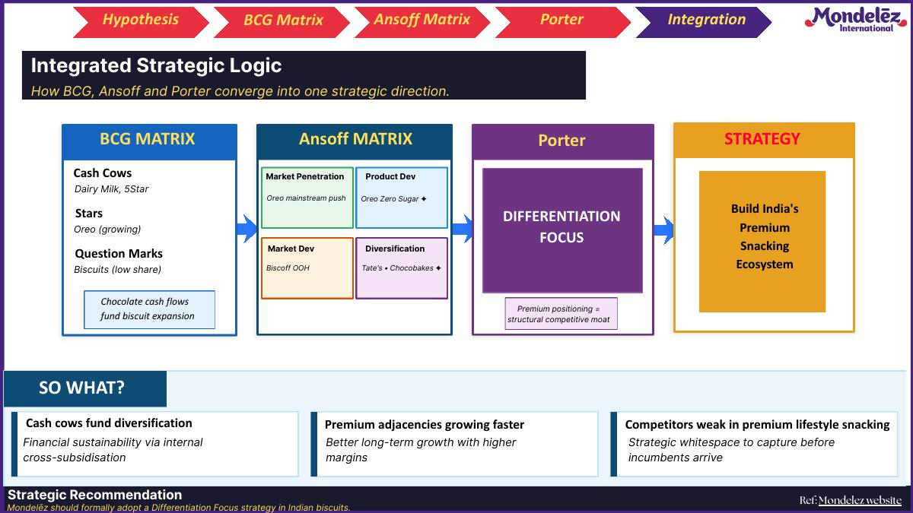
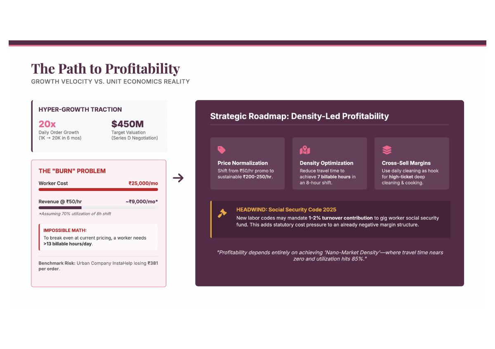

02 / STRATEGY2026 · INDIVIDUAL
Alok Industries
Profitability Diagnosis & Strategic Turnaround
Diagnosing structural profitability pressure and designing a phased turnaround.
STRATEGY · PRODUCT · BUSINESS ANALYSIS
I enjoy breaking down complex business and product problems, finding the insight that matters, and turning it into actionable strategy.
Selected MBA / independent analyses spanning turnaround strategy, market entry, portfolio strategy, business-model analysis and product teardown.
SELECTED WORK
Five pieces of work that show how I structure problems, test assumptions and turn analysis into a recommendation.

Product Teardown
Testing whether Toing's low-price proposition survives the actual user journey.

Profitability Diagnosis & Strategic Turnaround
Diagnosing structural profitability pressure and designing a phased turnaround.

U.S. Market Entry Strategy
Assessing market attractiveness, sizing the opportunity and designing a phased entry.

Finding the Growth White Space in Biscuits
Connecting portfolio and competitive strategy to identify a premium growth opportunity.

Business & Product Analysis
Testing whether a 10-minute home-help proposition can scale into a sustainable business.
HOW I THINK
The common thread across these projects is a simple sequence: structure the problem, find the evidence, then make the decision actionable.
Break ambiguous problems into clear analytical questions and decision points.
Combine research, data, competitive analysis and user observations to test assumptions.
Translate analysis into prioritised strategic or product recommendations.
ABOUT
I’m a PGPM candidate and former Capgemini Senior Analyst with experience across analytics, reporting, process improvement and business systems.
During my MBA, my interests have increasingly moved toward strategy, product management, consumer behaviour and business problem solving.
This portfolio captures selected strategy and product analyses I’ve worked on during 2026.
LET'S CONNECT